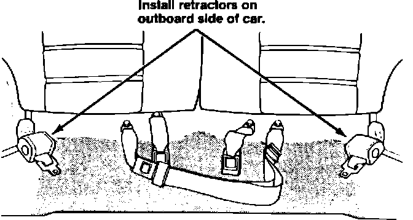
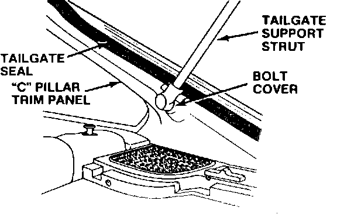
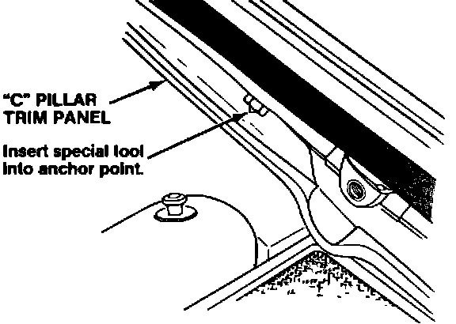
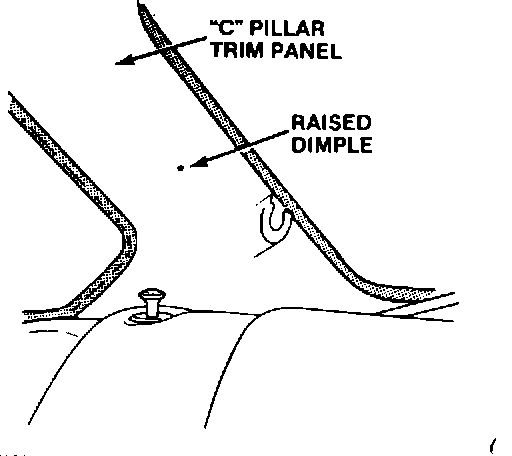
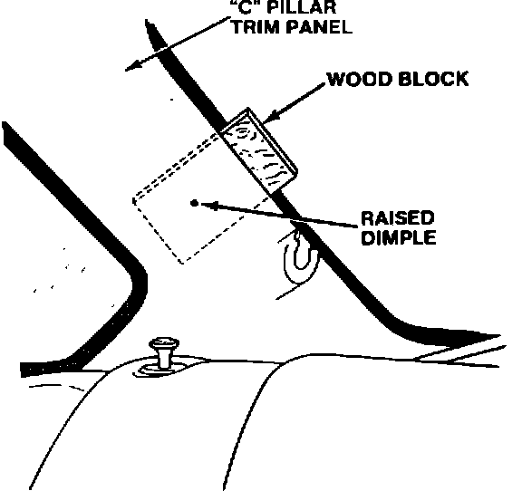
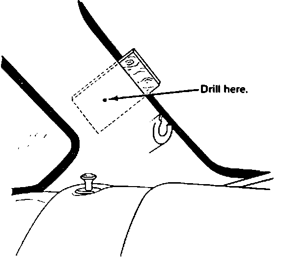
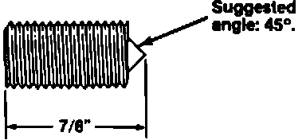

Rear Lap/Shoulder Seat Belt - Installation
91acura02
November 9, 1987
APPLICATION ALL
87-032
YEAR MODEL
'86-87 INTEGRA

Rear Lap/Shoulder Seat Belt Installation
SUBJECT
Customers may now purchase lap/shoulder rear seat belts for the 1986 and 1987 Integra.
INSTALLATION
Note: A special tool is needed to complete installation of the rear seat belts. See page two for instructions on how to make the special tool.
1. Remove the rear seat, and remove and discard the left and right rear seat belts.
NOTE: Do not remove the center seat belt.
2. Install the replacement retractors and receptacles as shown, then install the rearseat.
Torque: 32 N-m (3.2 kg-m, 23 lb.ft.)
NOTE: The retractor must be mounted on outboard sides of the car.

3. Have an assistant hold the tailgate open while you remove the tailgate support strut lower mounting bolt on one side.
NOTE: Do not lose the plastic tailgate support strut mounting bolt cover.

4. Pull the rubber tailgate seal away from the "C" pillar trim panel, then pull the trim panel away from the "C" pillar enough to locate the threaded shoulder belt anchor point behind the trim panel.
NOTE:
^ The anchor point for the shoulder belt is a fine thread SAE 7/16" nut welded to the underside of the "C" pillar sheet metal.
^ Threads in the anchor point may have paint on them. Clean the threads if necessary, before installing the special tool to avoid crossthreading the anchor point nut.
5. Install the threaded special tool fully into the anchor point behind the trim panel.

6. Press the "C" pillar trim panel back firmly into place against the tip of the special tool. This will create a raised dimple on the outer surface of the panel to use as a center point for drilling a hole in the panel.

7. Remove the special tool, then place the wood block between the "C" pillar trim panel and the "C" pillar, centered on the raised dimple as shown below.
CAUTION: Failure to use the wood block could cause the hole saw pilot drill bit to damage the anchor nut threads or the sheet metal.

8. Drill a hole through the trim panel with a 1" hole saw, using the raised dimple to center the hole.
9. Reinstall the "C" pillar trim panel, rubber seal tailgage strut support and plastic cover.
Torque: 22 N-m (2.2 kg-m, 16 lb.ft.)
10. Attach the shoulder belt into the anchor point in the "C" pillar, then attach the shoulder belt to the lap belt tongue plate.
Torque: 32 N-m (3.2 kg-m, 23 lb.ft.)
11. Perform the preceding steps on the other side.

SPECIAL TOOL MANUFACTURING
WARNING Do not use a galvanized bolt or galvanized threaded metal stock to make this tool. Galvanized metal products harmful gases when welded.
1. Cut off the head of a SAE 7/16" fine thread bolt, leaving about 7/8" thread after cutting.
2. Grind or machine a steep point of approximately 45~ onto the end of the bolt where the head was cut off.
3. Install a nut onto the threaded section of the bolt so it is flush with the base of the point, then tack weld it onto the bolt.
NOTE: Save the bolt for further installations of three-point rear seat belts.
PARTS INFORMAIION
Rear Seat Belt Set:
P/N 78630-SD2-305
Note: 2 rear seat belt sets per car (1 set per side) are required.
WARRANTY INFORMATION
None: This is a customer-pay operation.